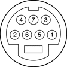

The PowerBook G4 computer has a video port that provides S-video output to a PAL or NTSC video monitor or VCR. The video output connector is a 7-pin S-video connector. Figure 3-9 shows the arrangement of the pins and Table 3-15 shows the pin assignments on the S-video connector.
Figure 3-9 S-video connector
| Pin number | S-video output connector |
| 1 | Analog GND |
| 2 | Analog GND |
| 3 | Video Y (luminance) |
| 4 | Video C (chroma) |
| 5 | composite video |
| 6 | Unused |
| 7 | Unused |
An adapter (included) can be plugged into the S-video connector and accepts an RCA plug for connecting a composite video monitor.
The PowerBook G4 computer provides video output at picture sizes and frame rates compatible with the NTSC and PAL standards; the picture sizes are listed in Table 3-16. Those picture resolutions produce underscanned displays on standard monitors.